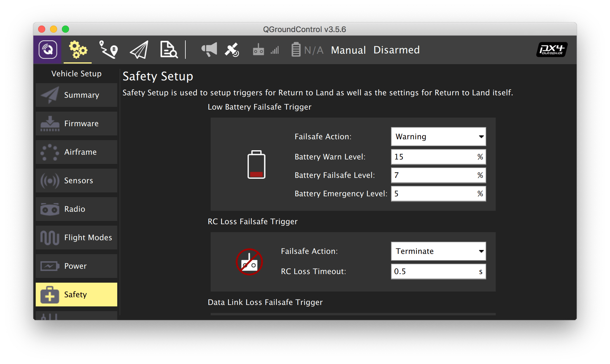

Настройка Failsafe
Основная статья: https://docs.px4.io/master/en/config/safety.html.
Во вкладке Safety настраиваются реакции квадрокоптера на различные нештатные ситуации. Рекомендуется включить как минимум реакцию на потерю связи с пультом управления:
- В программе QGroundControl перейдите в панель Vehicle Setup и выберите меню Safety.
- В блоке RC Loss Failsafe Trigger выберите один из рекомендуемых вариантов реакции на потерю связи с пультом:
- Land mode – переход в режим посадки;
- Terminate – аварийное отключение моторов.
- В поле RC Loss Timeout выберите значение таймаута, по истечении которого связь с пультом считается потерянной. Рекомендуемое значение – 2 s.
